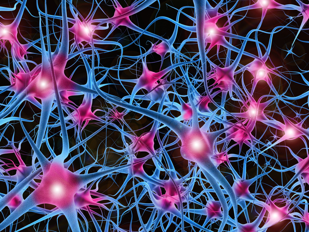

The objectives here are to:
Build a ConvNet from labeled image data to perform multiple category image classification
Understand how to use existing models to classify images
Describe how to fine-tune existing models for specific classification task
Click here to see the Project